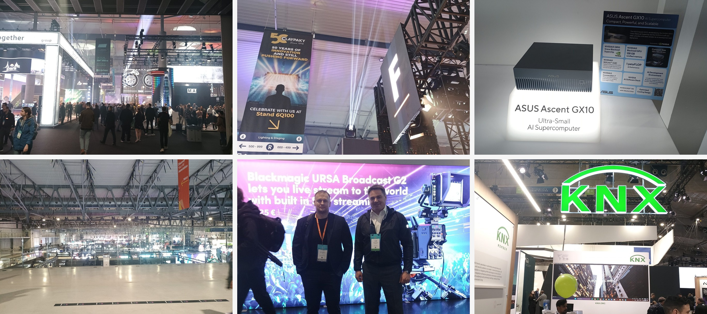

ISE 2026, Barcelona: brief travel notes
ISE 2026 (3–6 February, Barcelona) is a large AV exhibition focused on sound, lighting, stage solutions, displays, studio equipment, and power. The format is closer to show and emotion than to a technical engineering conference.
Route
Kyiv → Krakow by car → Barcelona by plane, and back the same way. I traveled with hand luggage only, and a city backpack turned out to be the optimal solution for trips of up to one week.
Practical details
- Climate: two clothing sets (winter + compact city outfit) generally work, but changing into “summer mode” in Krakow before the airport can be a mistake if winter weather is still outside.
- Health: I was recovering from a cold during the trip, which noticeably reduced communication efficiency.
- Barcelona: the metro is very accessible, but there are several ticket systems, so it is easy to buy the wrong one. Taxis are also reasonable.
- Food: restaurants are expensive and delivery is very expensive; shops are often the best option. Because dinners tend to be late, lunch before about 16:00 can become the last reliable chance to eat properly.
- Coffee: highly subjective. Bringing your own is not a bad idea.
- Observation: the warm climate explains the visible tent settlements of people living outdoors.
General impression
Most of the exposition was outside my main technical interests, with a lot of show-style installations, so it did not feel like Embedded World. Still, I found several useful contacts: ASUS, KNX, and several teams focused on robotics for studio and camera-related work.
Return trip
On the way back, near Zhytomyr, I got into an accident-like situation after a skid. The car went for repair, but I was fine. The next trip after that was a meeting with MathWorks.
